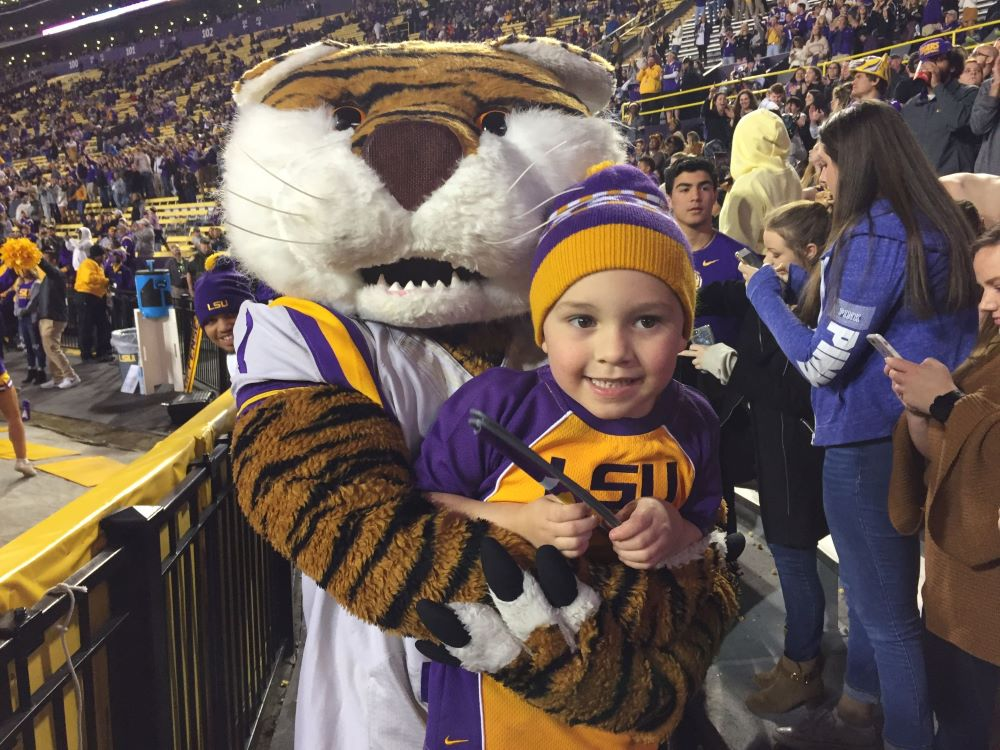

What game would be complete for a 5-year-old without seeing Mike The Tiger? Or "Costume Mike" as Liam calls him! With LSU cruising to an easy victory in the final minutes, Liam and I left our seats and walked down to the bottom of the student section in the corner of the end zone below us where he was still entertaining the fans awaiting the final whistle.
"Mike! Mike!" Liam called out. The towering Tiger turned around, a wide smile forever on his face. After exchanging high fives and handshakes, Mike hugged Liam tightly and posed for a picture. It was the perfect end to a memorable night with my son. And we will always cherish these special memories.
Page 5